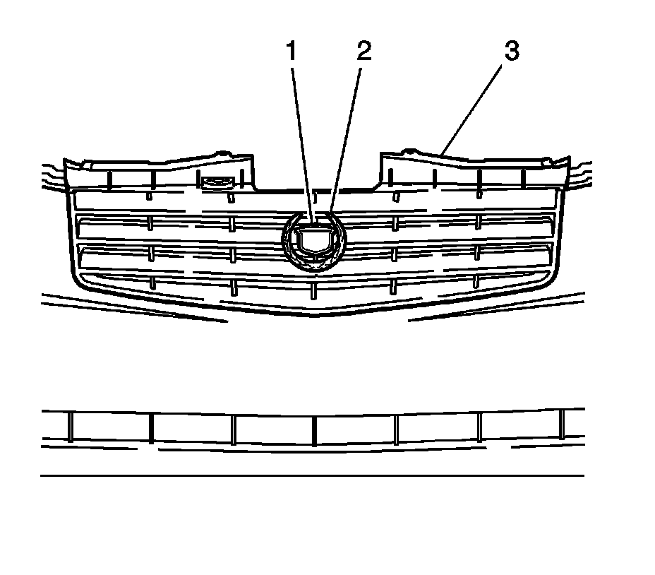

Radiator Grille Emblem Replacement (Base)
Radiator Grille Emblem Replacement (Base)
Tools Required
J 25070 Heat Gun
Removal Procedure
Important: Do not damage the painted grille.
1. Heat the loose emblem using the J 25070 in order to remove the loose emblem.

2. Hold the heat gun approximately 152 mm (6 in) from the emblem surface.
3. Apply the heat using a circular motion until the emblem can be pulled from the grille.
4. Remove either the loose wreath (2) or crest (1) from the grille.
Notice: Refer to Exterior Trim Emblem Removal Notice (Service Precautions) .
5. Remove the old emblem adhesive, using a plastic flat-bladed tool.
6. Remove all adhesive from the grille using 3M(R) P/N 07501 or equivalent.
7. Wash the area with warm soap and water.
8. Dry the area with a lint-free cloth.
Installation Procedure
1. Wipe the area with a clean lint-free cloth using a solution of isopropyl alcohol and water 50/50 mixture by volume.
Important: Do not touch the tape with your hands or allow the adhesive tape to come in contact with any dirt or foreign matter.
2. Peel the backing from the adhesive tape.
3. Align the pins on the backside of the emblem (1, 2) with the holes located in the grille (3).
4. Firmly press the emblem into place for 30 seconds in order to ensure proper adhesion of the emblem.